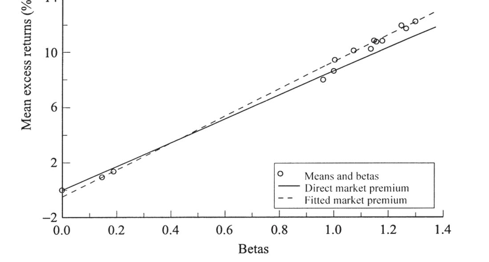
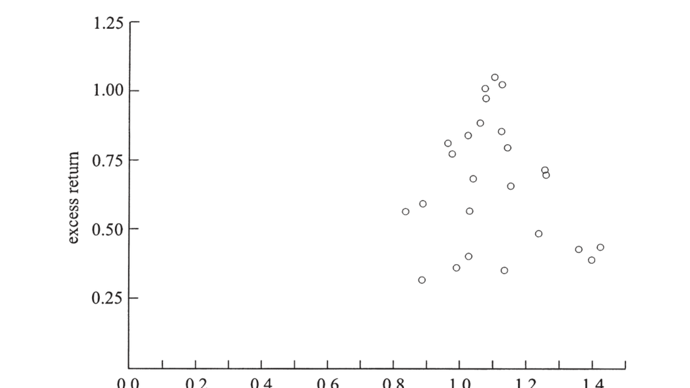
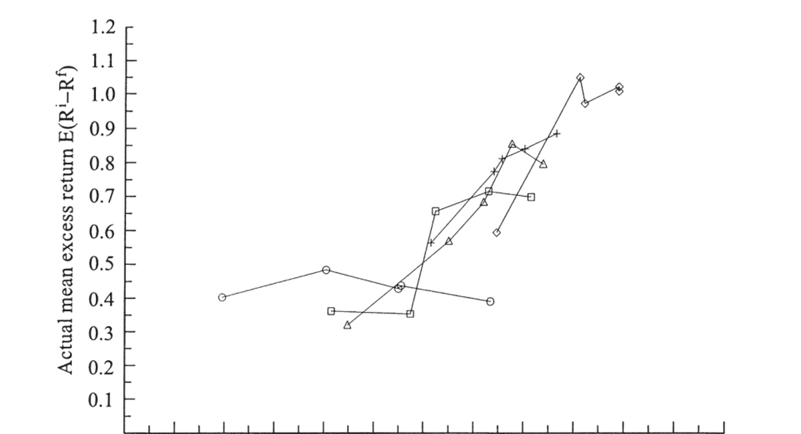

20. Expected Returns in the Time Series and Cross Section
20. Expected Returns in the Time Series and Cross Section
本章导读 本章(Cochrane 第 20 章,Part IV 实证综述开篇,全书最长)综述了改变金融学认识的实证事实。第一次革命(约 1970 年代初)确立的旧观点:① CAPM 是风险的良好度量;② 收益不可预测(股票、债券、汇率近随机游走,波动率恒定);③ 基金经理不能持续跑赢指数。新一代实证全面修正了这三点:① 多因子模型主导(CAPM 解释不了的平均收益差异);② 收益可预测(股利价格比预测股票、收益率曲线预测债券、利率差预测汇率,波动率时变);③ 部分基金似乎跑赢,但多因子"风格"归因可解释其持续性。§20.1 时序可预测性(d/p 预测长期收益,\(R^2\) 随期限上升);§20.2 截面(CAPM 在规模组合上成功 → 在价值组合上崩溃 → Fama-French 三因子修复;动量之谜);§20.3 总结诠释(价格揭示时变的预期收益,溢价源于衰退/财务困境风险)。
20. Expected Returns in the Time Series and Cross Section
Overview This chapter (Cochrane Ch 20, the opener of Part IV's empirical survey, the book's longest) surveys the empirical facts that reshaped finance. The first revolution (peaking ~early 1970s) established: ① the CAPM is a good measure of risk; ② returns are unpredictable (stocks, bonds, FX near random walks, constant volatility); ③ fund managers don't reliably beat indices. A new generation of empirical work has revised all three: ① multifactor models dominate (average-return differences the CAPM cannot explain); ② returns are predictable (the dividend/price ratio forecasts stocks, the yield curve forecasts bonds, interest differentials forecast FX, volatility varies); ③ some funds seem to outperform, but multifactor "style" attribution explains the persistence. §20.1 time-series predictability (d/p forecasts long-horizon returns, \(R^2\) rising with horizon); §20.2 the cross section (the CAPM succeeds on size portfolios → collapses on value portfolios → the Fama-French three-factor model repairs it; the momentum puzzle); §20.3 summary and interpretation (prices reveal time-varying expected returns, premia for recession/financial-distress risk).
20.1 时序可预测性 / Time-Series Predictability
股利价格比预测超额收益:回归系数与 \(R^2\) 都随预测期限上升。更新 Fama-French (1988b):一年期 \(R^2\approx0.15\) 不起眼,但五年期约 60% 的股票收益变动可由 \(D/P\) 事前预测。这并非"长期是独立现象"——而是同一底层现象的反映:预测变量持续(d/p 缓慢均值回复),故小的高频可预测性在长期累积成大 \(R^2\)。几乎任何合理分母(盈利、账面值、过去价格均线)都同样有效;期限利差、违约利差、T-bill 利率、投资/资本比、消费/财富比 (cay) 等也都预测股票收益。
20.1 Time-Series Predictability
The dividend/price ratio forecasts excess returns: both the regression coefficient and \(R^2\) rise with the forecast horizon. Updating Fama-French (1988b): the one-year \(R^2\approx0.15\) is unremarkable, but at a five-year horizon about 60% of stock-return variation is forecastable ahead of time from \(D/P\). This is not "long horizons are a separate phenomenon" — it reflects a single underlying fact: the forecasting variable is persistent (d/p mean-reverts slowly), so small high-frequency predictability accumulates into a large \(R^2\) at long horizons. Almost any sensible divisor (earnings, book value, a moving average of past prices) works as well; the term spread, default spread, T-bill rate, investment/capital ratio, and consumption/wealth ratio (cay) all forecast stock returns too.
可预测的是超额收益,即时变的风险报酬 / It is excess returns that are forecastable — a time-varying reward for risk 这些预测变量大多互相关、且与商业周期相关。Fama-French (1989) 的自然解释:预期收益随商业周期变动——衰退谷底需要更高的风险溢价才能让人持股,预期收益上升则价格下跌,于是我们看到低价、随后是市场要求的高收益。务必把这理解为风险报酬的时变,而非时变利率:一个"婴儿潮储蓄推高股市"之类的非风险解释会预测利率与股票收益同幅变动,但事实是超额收益可预测。(回归不必因在右、果在左;只要右侧变量与误差正交即可——这里误差是预测误差,正如"实际天气对天气预报"的回归。)Most of these forecasting variables are correlated with each other and with the business cycle. Fama-French's (1989) natural interpretation: expected returns vary over the business cycle — it takes a higher risk premium to get people to hold stocks at the bottom of a recession; when expected returns rise, prices fall, so we see low prices followed by the high returns the market requires. This must be understood as time-variation in the reward for risk, not time-varying interest rates: a non-risk story like "baby-boomer savings boosting the market" predicts interest rates moving as much as stock returns, but the fact is that excess returns are forecastable. (A regression need not have causes on the right and effects on the left; you just need the right-hand variable orthogonal to the error — here a forecast error, like regressing actual weather on a weather forecast.)
债券与汇率同理。债券:期限模型长期成立,但陡峭上升的收益率曲线意味着未来一年长债预期收益高于短债(违反纯预期假说)。汇率:买入利率"异常高于"美国的国家的债券,即便换回美元也预期更高收益(远期溢价之谜)。这些规律都易受 "比索问题"(Peso problem) 扭曲——小概率大事件(如墨西哥比索贬值、Rietz 1988 对股权溢价的"大萧条恐惧"解释)在样本中未发生,会使预测回归看似违反预期假说。
20.2 截面:CAPM 与多因子模型 / The Cross Section
Bonds and FX are similar. Bonds: the expectations model works in the long run, but a steeply upward-sloping yield curve means long bonds have higher expected returns than short bonds over the next year (violating the pure EH). FX: buying bonds of a country whose rates are "unusually higher" than the US's earns a higher expected return even after converting back to dollars (the forward-premium puzzle). All these are vulnerable to "Peso problems" — small probabilities of large events (a Mexican peso devaluation; Rietz's 1988 "fear of another Great Depression" explanation of the equity premium) that do not occur in-sample can make forecasting regressions appear to violate the expectations hypothesis.
20.2 The Cross Section: CAPM and Multifactor Models
CAPM 的成功(规模组合)。 检验流程:① 找一个与平均收益相关的特征,据之把股票排成组合,确认平均收益有差异;② 算组合 β,看能否由 β 差异解释收益差异;③ 否则即"异象",考虑多个 β。(用组合而非个股:个股 β 测量误差大且时变、个股收益太波动。)历来 CAPM 出奇成功——每个看似高收益的策略都恰好有高 β。下图 20.8(10 个规模组合 + 公司债 + 国债)展示这一成功:平均收益随 β 上升,长期债与公司债虽标准差不低却因 β 低而收益也低。唯一瑕疵是最右的最小市值组合收益略高于 β 所示——著名的 "小公司效应"(Banz 1981)。
The CAPM's success (size portfolios). The testing loop: ① find a characteristic associated with average returns, sort stocks into portfolios by it, and check there is a spread in average returns; ② compute portfolio betas and see whether the return spread is explained by the beta spread; ③ if not, you have an "anomaly," consider multiple betas. (Use portfolios not individual stocks: individual betas have large measurement error and vary over time, and individual returns are too volatile.) For a generation the CAPM was stunningly successful — every strategy that seemed to give high average returns turned out to have high betas. Figure 20.8 (10 size portfolios + corporate and government bonds) shows this success: average returns rise with beta, and long-term/corporate bonds have low returns in line with their low betas despite standard deviations nearly as high as stocks. The one blemish is the smallest-cap portfolio (far right), earning a bit more than its beta suggests — the famous "small-firm effect" (Banz 1981).

图 20.8 CAPM。10 个规模排序股票组合 + 国债 + 公司债的平均收益对市场 β(1947–1996)。实线为时序检验(精确拟合市场与 T-bill),虚线为 OLS 截面回归。右上为小公司组合,左下为国债/T-bill。CAPM 拟合得相当好。
Figure 20.8 The CAPM. Average returns vs. market beta for 10 size-sorted stock portfolios plus government and corporate bonds (1947–1996). The solid line is the time-series test (fitting the market and T-bill exactly), the dashed line an OLS cross-sectional regression. The small-firm portfolios are at the top right, government bonds/T-bill at the lower left. The CAPM fits quite well.
CAPM 在价值组合上崩溃 / The CAPM collapses on value portfolios 价值股(市值相对账面值低)给出高平均收益,成长股相反。这是时序"价格比预测"在截面上的对应:低价格比预示高收益。把股票按规模与账面市值比排成 25 个组合(图 20.9),最高组合平均收益是最低组合的三倍,而这与市场 β 毫无关系——CAPM 彻底失败。细查:规模变动产生的收益差与 β 正相关,但账面市值比变动产生的收益差与 β 负相关(图 20.10、20.11)。Value stocks (low market value relative to book) give high average returns; growth stocks the opposite. This is the cross-sectional counterpart of time-series price-ratio predictability: low price ratios forecast high returns. Sorting stocks into 25 portfolios by size and book/market (Figure 20.9), the highest portfolio has three times the average return of the lowest, and this has nothing to do with market beta — the CAPM is a disaster. Digging deeper: variation in size produces a return spread positively related to beta, but variation in book/market produces a spread negatively related to beta (Figures 20.10, 20.11).

图 20.9 按规模与账面市值比排序的 25 个组合的平均收益对市场 β。平均收益有约三倍的离散度,却与 β 几乎无关——CAPM 的灾难。
Figure 20.9 Average returns vs. market beta for 25 portfolios sorted on size and book/market. There is a roughly threefold spread in average returns with essentially no relation to beta — the CAPM's disaster.
Fama-French 三因子模型 用三个因子解释这 25 个组合:市场、SMB(小盘减大盘)、HML(高减低账面市值比)。组合在 SMB、HML 上的不同载荷(β)解释了平均收益差异(所有组合的市场 β 都接近 1,故市场只解释股债之差、不解释股票内部差异)。把横轴换成三因子模型的预测值(图 20.12、20.13),各点紧贴 45° 线——远好于 CAPM。
The Fama-French three-factor model explains these 25 portfolios with three factors: the market, SMB (small minus big), and HML (high minus low book/market). The portfolios' differing loadings (betas) on SMB and HML explain the average-return differences (all portfolios have market betas near 1, so the market explains the stock-bond difference but not differences within stocks). Plotting the three-factor model's predicted values on the horizontal axis (Figures 20.12, 20.13), the points lie close to the 45° line — far better than the CAPM.

图 20.12 25 个组合的实际平均超额收益对 Fama-French 三因子模型预测值;连线为同一账面市值比内不同规模的组合。点若全在 45° 线上则模型正确——比图 20.9/20.10 贴合得多。
Figure 20.12 Actual mean excess returns of the 25 portfolios vs. the Fama-French three-factor model's prediction; lines connect portfolios of different size within a book/market category. Points should lie on the 45° line if the model is correct — far closer than in Figures 20.9/20.10.
规模与价值因子代理什么? / What do the size and value factors proxy for? Fama-French 模型可两面看:作 APT——三因子在 25 组合的时序回归 \(R^2\) 高达 90–95%,残差若不近乎共动就会有近似套利机会;作宏观因子模型——则需找出 HML、SMB 代理的真实宏观、不可分散风险。Fama-French (1996) 提示某种"财务困境/衰退因子":典型价值股是历经坏消息、濒临破产者,若遇信用紧缩/挤兑/逃向质量,这类股会大跌——而这恰是投资者最不愿听到持股变废纸之时。(个体困境是特异风险、可分散;只有平均投资者在意的总体事件才生溢价。)Heaton-Lucas:典型股东是小私企主,其收入对这类财务事件敏感,故要求价值股溢价。但实证支持仍弱(HML 与总体困境度量相关性不强);Lettau-Ludvigson:HML 对市场与消费的 β 时变,在坏时点对坏消息敏感。注意:用按规模/账面市值比排序的因子去解释同样排序的组合并非同义反复——若收益按"股票代码首字母"排序却无 β 解释,加 A-L/M-Z 组合到右侧未必提高 \(R^2\);关键是检验模型时本就该按与预期收益相关的特征排组合(否则无离散度可检验)。The Fama-French model can be read two ways: as an APT — the three factors' time-series \(R^2\) on the 25 portfolios is 90–95%, so unless the residuals nearly co-move there would be near-arbitrage; as a macro-factor model — then one must find the real, macro, non-diversifiable risk that HML and SMB proxy for. Fama-French (1996) suggest a "financial-distress/recession factor": the typical value firm has been driven down by bad news and is near distress; in a credit crunch, run, or flight to quality such stocks crash — exactly when an investor least wants to hear his stocks are worthless. (Individual distress is idiosyncratic and diversifiable; only aggregate events the average investor cares about earn a premium.) Heaton-Lucas: the typical stockholder is a small-business proprietor whose income is sensitive to such events, so demands a value premium. But empirical support is weak (HML correlates little with aggregate distress measures); Lettau-Ludvigson: HML's beta on the market and consumption is time-varying, sensitive to bad news in bad times. Note: explaining size/book-market-sorted portfolios with factors sorted the same way is not a tautology — if returns sorted on "first letter of the ticker" had no beta explanation, adding A-L/M-Z portfolios to the right need not raise \(R^2\); and in testing a model it is exactly right to sort on characteristics related to expected returns (else there is no spread to test).
动量与反转。 按过去表现排序:买长期输家、卖长期赢家(基于 −5 到 −1 年)反而赚钱——反转 (reversal),即个股长期均值回复,可由 Fama-French 三因子解释(输家有高 HML β、继承价值溢价)。但买短期赢家、卖短期输家(基于过去 1 年)也赚钱——动量 (momentum),这是个谜:三因子模型预测错方向(动量输家价低、本应像价值股有高收益)。动量其实是个股月度收益微弱可预测性的"放大镜":个股年标准差约 40%,故 \(R^2\) 仅 0.0025 也能让赢家组合(过去约涨 80%)产生约 1% 月超额收益。但动量需频繁交易,Carhart (1997) 算出扣交易成本后不可获利;Moskowitz-Grinblatt 发现收益多来自小型流动性差股票的空头及避税抛售——更像微观结构小故障而非风险报酬的核心寓言。动量在早期样本中几乎消失、在期货市场中缺失,均提示微观结构解释。
20.3 总结与诠释 / Summary and Interpretation
Momentum and reversal. Sorting by past performance: buying long-term losers and selling long-term winners (based on years −5 to −1) makes money — reversal, i.e. individual stocks mean-revert over the long term, explained by Fama-French (losers have high HML beta, inheriting the value premium). But buying short-term winners and selling short-term losers (based on the past year) also makes money — momentum, which is a puzzle: the three-factor model predicts the wrong sign (momentum losers have low prices and should, like value stocks, have high returns). Momentum is really a "magnifying glass" on the slight predictability of monthly individual stock returns: with an annual individual standard deviation of ~40%, even an \(R^2\) of 0.0025 lets the winning portfolio (up ~80% in the past year) earn ~1% monthly excess return. But momentum requires frequent trading; Carhart (1997) finds it unprofitable after transaction costs; Moskowitz-Grinblatt find the gains come mostly from short positions in small illiquid stocks and tax-loss selling — more a microstructure glitch than a central parable for risk and return. Momentum nearly vanishes in earlier samples and is absent in futures markets, both suggesting a microstructure explanation.
20.3 Summary and Interpretation
价格揭示时变的预期收益,溢价源于衰退/困境风险 / Prices reveal time-varying expected returns; premia for recession/distress risk 虽然新事实清单很长,但都呈现同一模式。放大镜:1960 年代即知高频收益有微弱可预测性(\(R^2\) 0.01–0.1),曾因不可利用而被忽视;新事实是把小事实放大成经济上重要的巧妙手段(持续变量使 \(R^2\) 随期限升至 30–50%;可排序使小预测性乘以巨大过去收益)。没叫的狗:本该有某物可预测以使收益不可预测,却没有——股利本应可预测(却近不可预测)、债券收益率本应可预测(却近不可预测)、汇率本应可预测(却反向)。价格揭示预期收益:预期收益上升则价格被压低,故"低价"(低 P/D、P/E、P/B,低市值/账面值,高长债收益率,高外国利率)揭示市场预期的高收益。最自然的诠释:个股与市场的风险溢价都随时间缓慢变动,故可由价格比追踪市场预期收益。宏观风险:所有预测变量都与宏观活动相关(d/p 与违约利差高相关、在坏时升;期限利差是最佳衰退预测器之一),价值/小盘股典型地处于困境——这些溢价是对衰退与经济范围财务困境风险的报酬。具体地:要赚价值/可预测性策略的钱,你得在熊市谷底、衰退/金融恐慌中、长债与公司债价格异常低时买入风险资产——此时很少人有胆量或余钱这么做。这正是理论家一代人前就预期的。Though the list of new facts is long, all show the same pattern. Magnifying glasses: we knew since the 1960s that high-frequency returns are slightly predictable (\(R^2\) 0.01–0.1), dismissed because they seemed unexploitable; the new facts are clever ways to make small facts economically important (persistent variables raise \(R^2\) to 30–50% with horizon; sortability multiplies small predictability by huge past returns). Dogs that didn't bark: something should be predictable so that returns are not, and it isn't — dividends should be predictable (but are nearly unpredictable), bond yields should be (but are nearly unpredictable at one year), exchange rates should be (but move the wrong way). Prices reveal expected returns: when expected returns rise, prices are driven down, so a "low" price (low P/D, P/E, P/B; low market/book; high long-bond yield; high foreign rate) reveals a market expectation of high returns. The most natural interpretation: the risk premium on individual securities and the market as a whole varies slowly over time, trackable via price ratios. Macroeconomic risks: all the forecasting variables are tied to macro activity (d/p highly correlated with the default spread, rising in bad times; the term spread among the best recession forecasters); value/small stocks are typically distressed — these premia are rewards for recession and economy-wide financial-distress risk. Concretely: to earn the value/predictability premia you must buy risky assets at the bottom of a bear market, in a recession or financial panic, when long-term and corporate bond prices are unusually low — when few have the guts (risk tolerance) or the wallet to do so. This is just what theorists anticipated a generation ago.
小结 / Summary
旧的"CAPM + 不可预测 + 无超额业绩"三观已被全面修正:收益在时序上可预测(价格比、利率差,\(R^2\) 随期限升)、在截面上需多因子(CAPM 在规模上成功却在价值上崩溃,Fama-French 三因子修复)、动量仍是谜(可能是微观结构)。统一线索:价格揭示缓慢变动的预期收益,而这些溢价最自然地诠释为对衰退与财务困境风险的报酬——量化这些风险的经济模型尚在襁褓(Campbell-Cochrane 1999 是好的开端)。下一章直面股权溢价之谜与消费模型。
Summary
The old "CAPM + unpredictability + no abnormal performance" view has been thoroughly revised: returns are predictable in the time series (price ratios, interest differentials, \(R^2\) rising with horizon), the cross section needs multiple factors (the CAPM succeeds on size but collapses on value, the Fama-French three-factor model repairs it), and momentum remains a puzzle (possibly microstructure). The unifying thread: prices reveal slowly-varying expected returns, and these premia are most naturally interpreted as rewards for recession and financial-distress risk — though economic models quantifying these risks are still in their infancy (Campbell-Cochrane 1999 is a good start). The next chapter confronts the equity premium puzzle and consumption-based models.